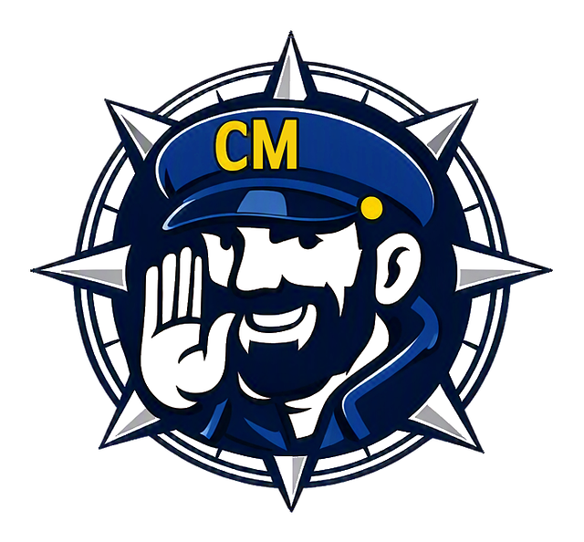

CoastMate
CoastMate™ Text Message Terms
Who sends the texts
OceanComm Labs LLC, 1 Lazy Lane, Harwich, MA 02645, sends these texts through the CoastMate™ app.
What you may receive
When a CoastMate™ boater adds you as a shore contact and turns on text updates, you get one intro text. It asks you to reply YES to get alerts.
After you reply YES, you may get:
- One confirmation text.
- Texts if the boater's trip is overdue, each with a link to a live location page and the boater's phone battery level.
- One all-clear text when the trip ends safely.
If you do not reply YES, you get no overdue or all-clear texts.
How you opt in
The boater enters your mobile number and confirms you agreed to receive these texts. You then opt in yourself by replying YES (or Y) to the intro text. The intro text also tells you how to opt out.
The messages
Intro text: CoastMate™: [Boater name] added you as a shore contact for their boat trips. Reply YES to get alerts if they are late returning, and a message when they end a trip safely. Msg & data rates may apply. Reply STOP to opt out, HELP for help.
After you reply YES: CoastMate™: Thanks. You will get alerts for [Boater name]'s trips. Msg & data rates may apply. Reply STOP to opt out.
After you reply HELP: CoastMate™ shore contact alerts. Help: support@coastmate.ai. Msg & data rates may apply. Reply STOP to opt out.
[Boater name] is the name of the boater who added you.
How often
One intro text. If you have not replied, the boater can send it again, at most once every 24 hours. After you reply YES: one confirmation text, up to four overdue texts for a late trip, and one all-clear text. Texts go to US numbers only.
Cost
Message and data rates may apply. CoastMate™ does not charge shore contacts.
Opt out and help
Reply YES to get alerts. Reply STOP at any time and you will get no more texts. Reply HELP for help, or email support@coastmate.ai.
Carriers
Carriers are not liable for delayed or undelivered messages.
Privacy
We do not share mobile phone numbers or text message consent with third parties or affiliates for their marketing or promotional purposes. We share a phone number only with our text message provider so that it can deliver the message. We do not send marketing texts.
Read our privacy policy.
Emergencies
CoastMate™ texts are not an emergency service. In an emergency call 911 or hail the Coast Guard on VHF Channel 16.
Last updated: October 22, 2026